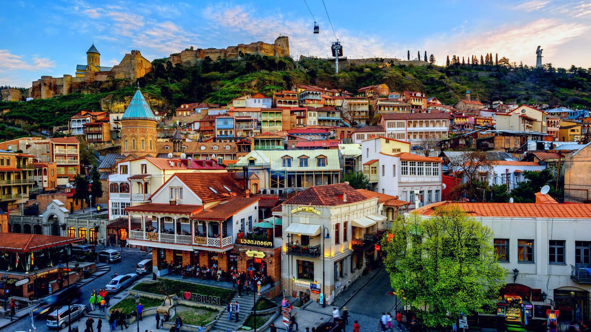
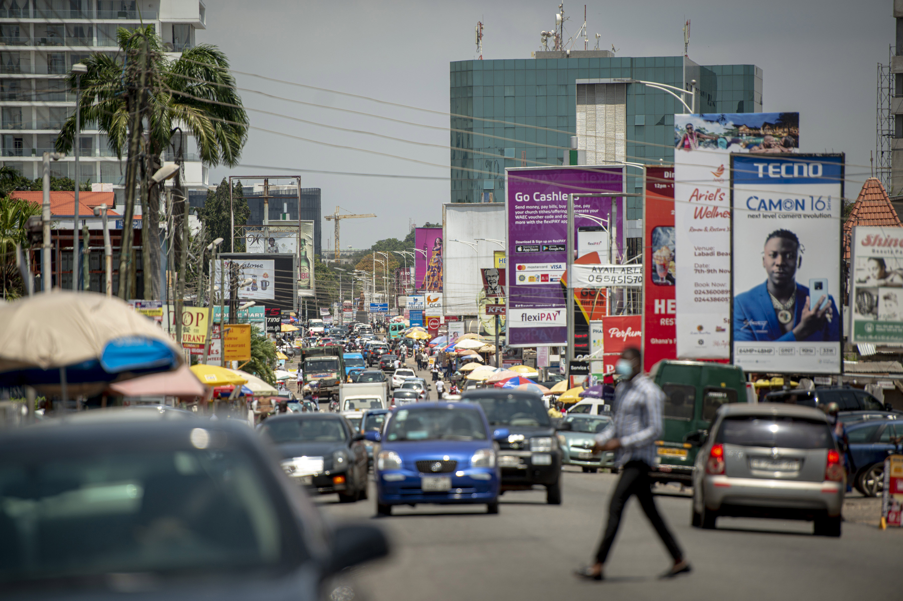

<!DOCTYPE html>
<html lang="en">
<head>
<title>Miniature Earth | Hologram Demo</title>
<meta charset="utf-8">
<meta name="viewport" content="width=device-width">

<link rel="stylesheet" href="hologram/style.css">
<script src="../miniature.earth.core.js"></script>

	
	
	
	
	
	
	
	<style>
	a.tooltip {outline:none; }
a.tooltip strong {line-height:30px;}
a.tooltip:hover {text-decoration:none;} 
a.tooltip span {
    z-index:10;display:none; 
    margin-top:-175px; margin-left:-250px;   
}
a.tooltip:hover span{
    display:inline; position:absolute; 
}

.callout {z-index:20;position:absolute;border:0;top:-34px;left:120px;}
    
/*CSS3 extras*/

</style>
	
	
	
	
	
	
	
	
	
	
<script>

// if ( location.protocol == 'file:' ) {
// 	alert( 'This demo does not work with the file protocol due to browser security restrictions.' );
// }

	
	
	
	
	
	
	
	
	
	
	

var myearth;
var sprites = [];

window.addEventListener( 'load', function() {

	myearth = new Earth( 'myearth', {
	
		location : { lat: 20, lng : 20 },
	
		light: 'none',

		mapImage: 'hologram/hologram-map.svg',
		transparent: true,
		
		autoRotate : true,
		autoRotateSpeed: 0.2, // დედამიწის ბრუნვის სიჩქარე.
		autoRotateDelay: 40,
		autoRotateStart: 70,			
		
	} );
	
	
	myearth.addEventListener( "ready", function() {

		this.startAutoRotate();

		// connections


		

		//--------------------------------------------------------------------------------------------------------------------------------------------------//
		// clip
		var clippedLine = this.addLine( {
			locations : [
			{ lat: 41, lng: 45 },
			{ lat: 41, lng: 15 },
			],
			clip: 0,
			width: 0.7,
			color: "#ffa500",
			//---------------//
			dashed: true,
			dashSize: 0.25,
			dashRatio: 0.5,
			dashOffset: 0.25,
			//---------------//
			offsetFlow: 0.1,
			offsetEasing: 'linear'
		} );
		
		this.addOverlay( {
		content: '<a style="color:white" href="https://www.google.com/search?q=tbilisi&tbm=isch&ved=2ahUKEwj_7uX6tO76AhUvwgIHHU78C28Q2-cCegQIABAA&oq=tbilisi&gs_lcp=CgNpbWcQAzIECCMQJzIECAAQHjIECAAQHjIECAAQHjIECAAQHjIECAAQHjIECAAQHjIECAAQHjIECAAQHjIECAAQHjoHCAAQgAQQEzoHCAAQgAQQA1DoBlj6DmDgEWgAcAB4AIABmgGIAaYIkgEDMC44mAEAoAEBqgELZ3dzLXdpei1pbWfAAQE&sclient=img&ei=CApRY__KI6-Ei-gPzviv-AY&bih=700&biw=1600" class="tooltip">  თბილისი     <span> <br />       Tbilisi was founded  <br />    in the 5th century    </span></a>',
			location : { lat: 45, lng: 40 },
			className : 'docs-tip', depthScale: 0.75
		} );
		
		clippedLine.animate( 'clip', 1, { loop: true, oscillate: true, duration: 1000 } );	
		//--------------------------------------------------------------------------------------------------------------------------------------------------//


		// endWidth
		this.addLine( {
			locations : [
			{ lat: 41, lng: 45 },
			{ lat: 41, lng: 15 },
			],
			color:"#808080",
			width: 0.2
		} );
		
		this.addOverlay( {
			content: '<a style="color:white" href="https://www.google.com/search?q=tbilisi&tbm=isch&ved=2ahUKEwj_7uX6tO76AhUvwgIHHU78C28Q2-cCegQIABAA&oq=tbilisi&gs_lcp=CgNpbWcQAzIECCMQJzIECAAQHjIECAAQHjIECAAQHjIECAAQHjIECAAQHjIECAAQHjIECAAQHjIECAAQHjIECAAQHjoHCAAQgAQQEzoHCAAQgAQQA1DoBlj6DmDgEWgAcAB4AIABmgGIAaYIkgEDMC44mAEAoAEBqgELZ3dzLXdpei1pbWfAAQE&sclient=img&ei=CApRY__KI6-Ei-gPzviv-AY&bih=700&biw=1600" class="tooltip">  ნაპოლი     <span> <br />       napoli was founded  <br />    in the 5th century    </span></a>',
			location : 			{ lat: 45, lng: 12 },
			className : 'docs-tip', depthScale: 0.75
		} );
		
	//--------------------------------------------------------------------------------------------------------------------------------------------------//


		//--------------------------------------------------------------------------------------------------------------------------------------------------//
		// clip
		var clippedLine = this.addLine( {
			locations : [
			{ lat: 39, lng: 38 },
			{ lat: 21, lng: 15 },
			],
			clip: 0,
			width: 0.7,
			color: "#ffa500",
			//---------------//
			dashed: true,
			dashSize: 0.25,
			dashRatio: 0.5,
			dashOffset: 0.25,
			//---------------//
			offsetFlow: 0.1,
			offsetEasing: 'linear'
		} );
		
		this.addOverlay( {
			content: '<a style="color:white" href="https://www.google.com/search?q=turkish&tbm=isch&ved=2ahUKEwiB5Jf4tO76AhXywAIHHRTNAVMQ2-cCegQIABAA&oq=turkish&gs_lcp=CgNpbWcQAzIHCAAQgAQQEzIHCAAQgAQQEzIHCAAQgAQQEzIHCAAQgAQQEzIHCAAQgAQQEzIHCAAQgAQQEzIHCAAQgAQQEzIHCAAQgAQQEzIHCAAQgAQQEzIHCAAQgAQQEzoECCMQJzoHCAAQgAQQGDoHCAAQgAQQA1DdCFiyEGDYE2gAcAB4AIABiQGIAdQHkgEDMC44mAEAoAEBqgELZ3dzLXdpei1pbWfAAQE&sclient=img&ei=AwpRY8HWBvKBi-gPlJqHmAU&bih=700&biw=1600" class="tooltip">  თურქეთი     <span> <br />       Turkey was founded  <br />    in the 7th century    </span></a>',
			
			location : { lat: 39, lng: 38  },
			className : 'docs-tip', depthScale: 0.75
		} );
		
		clippedLine.animate( 'clip', 1, { loop: true, oscillate: true, duration: 1000 } );	
		//--------------------------------------------------------------------------------------------------------------------------------------------------//


		// endWidth
		this.addLine( {
			locations : [
			{ lat: 39, lng: 38 },
			{ lat: 21, lng: 15 },
			],
			color:"#808080",
			width: 0.2
		} );
		
		this.addOverlay( {
			content: '<a style="color:white" href="https://www.google.com/search?q=Ghana&sxsrf=ALiCzsbRRyqoi-M95nsr2-LBH7a1k2eilw:1666255338849&source=lnms&tbm=isch&sa=X&ved=2ahUKEwiF2M7stO76AhWSDewKHafbAOUQ_AUoAnoECAIQBA&biw=1600&bih=700&dpr=1" class="tooltip">  განა     <span> <br />       Ghana was founded  <br />    in the 112th century    </span></a>',
			
			location : { lat: 20, lng: 12 },
			className : 'docs-tip', depthScale: 0.75
		} );
		
	//--------------------------------------------------------------------------------------------------------------------------------------------------//


		var line = {
			color : 'red',
			opacity: 0.35,
			hairline: true,


		};


		
		//ხაზების დამატება
		for ( var i in connections ) {			
			line.locations = [ { lat: connections[i][0], lng: connections[i][1] }, { lat: connections[i][2], lng: connections[i][3] } ];
			this.addLine( line );
		}
		
		
		
		// add 8 shine sprites
		
		for ( var i=0; i < 8; i++ ) {
			//ციმციმის ობიექტები
			sprites[i] = this.addSprite( {
				image: 'hologram/hologram-shine.svg',
				scale: 2.01,
				offset: -0.5,
				opacity: 0.5
			} );

			pulse( i );
		}
		
		
	} );
	
	
} );


function getRandomInt(min, max) {
	min = Math.ceil(min);
	max = Math.floor(max);
	return Math.floor(Math.random() * (max - min)) + min;
}

//ციმციმი
function pulse( index ) {
	//შემთხვევითი ლოკაცია
	 var random_location = connections[ getRandomInt(0, connections.length-1) ];


	 //წერტილებზე ლოკაციების მინიჭება
	 sprites[index].location = { lat: random_location[0] , lng: random_location[1] };
	
	//მიმდევრობით ციმციმი
	 sprites[index].animate( 'scale', 1.5, { duration: 320, complete : function(){
		this.animate( 'scale', 0.1, { duration: 320, complete : function(){
			setTimeout( function(){ pulse( index ); }, getRandomInt(100, 400) );
		} });
	} });
}


// locations conntected by lines and places where hologram shines appear

//ლოკაციები
// var connections = [
// 	[59.651901245117,17.918600082397,	41.8002778,12.2388889],
// 	[59.651901245117,17.918600082397,	51.4706,-0.461941],
	
// 	[13.681099891662598,100.74700164794922,	-6.1255698204,106.65599823],
// 	[13.681099891662598,100.74700164794922,	28.566499710083008,77.10310363769531],
	
// 	[30.12190055847168,31.40559959411621, -1.31923997402,36.9277992249],
// 	[30.12190055847168,31.40559959411621, 25.2527999878,55.3643989563],
// 	 [30.12190055847168,31.40559959411621, 41.8002778,12.2388889],

// 	[28.566499710083008,77.10310363769531,	7.180759906768799,79.88410186767578],
// 	[28.566499710083008,77.10310363769531,	40.080101013183594,116.58499908447266],
// 	[28.566499710083008,77.10310363769531,	25.2527999878,55.3643989563],

// 	[-33.9648017883,18.6016998291, -1.31923997402,36.9277992249],
	
// 	[-1.31923997402,36.9277992249, 25.2527999878,55.3643989563],
	
// 	[41.8002778,12.2388889, 51.4706,-0.461941],
// 	[41.8002778,12.2388889, 40.471926,-3.56264],

// 	[19.4363,-99.072098,	25.79319953918457,-80.29060363769531],
// 	[19.4363,-99.072098,	33.94250107,-118.4079971],
// 	[19.4363,-99.072098,	-12.0219,-77.114304],
	
// 	[-12.0219,-77.114304,	-33.393001556396484,-70.78579711914062],
// 	[-12.0219,-77.114304, -34.8222,-58.5358],
// 	[-12.0219,-77.114304, -22.910499572799996,-43.1631011963],
	
// 	[-34.8222,-58.5358, -33.393001556396484,-70.78579711914062],
// 	[-34.8222,-58.5358, -22.910499572799996,-43.1631011963],
	
// 	[22.3089008331,113.915000916, 13.681099891662598,100.74700164794922],
// 	[22.3089008331,113.915000916, 40.080101013183594,116.58499908447266],
// 	[22.3089008331,113.915000916, 31.143400192260742,121.80500030517578],
	
// 	[35.552299,139.779999, 40.080101013183594,116.58499908447266],
// 	[35.552299,139.779999, 31.143400192260742,121.80500030517578],
	
// 	[33.94250107,-118.4079971,	40.63980103,-73.77890015],
// 	[33.94250107,-118.4079971,	25.79319953918457,-80.29060363769531],
// 	[33.94250107,-118.4079971,	49.193901062,-123.183998108],
	
// 	[40.63980103,-73.77890015, 25.79319953918457,-80.29060363769531],
// 	[40.63980103,-73.77890015, 51.4706,-0.461941],
	
// 	[51.4706,-0.461941, 40.471926,-3.56264],
	
// 	[40.080101013183594,116.58499908447266,	31.143400192260742,121.80500030517578],
	
// 	[-33.94609832763672,151.177001953125,	-41.3272018433,174.804992676],
// 	[-33.94609832763672,151.177001953125,	-6.1255698204,106.65599823],
	
// 	[55.5914993286,37.2615013123, 59.651901245117,17.918600082397],
// 	[55.5914993286,37.2615013123, 41.8002778,12.2388889],
// 	[55.5914993286,37.2615013123, 40.080101013183594,116.58499908447266],
// 	[55.5914993286,37.2615013123, 25.2527999878,55.3643989563],
// ];


</script>

</head>

<body>

	<div id="myearth">
		<div id="glow"></div>
	</div>

</body>
</html>
